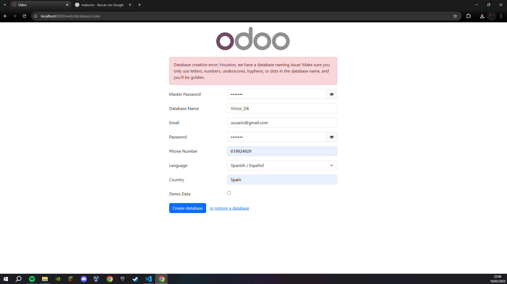

Instalación del SGE
En esta seccion de la pagina vamos a ver como funciona la instalacion de nuestro SGE "Odoo".
Vamos a ver paso por paso como debemos de instalarlo para que heche a funcionar; IMPORTANTE: esto es un sistema que se abre de manera local en tu navegador.
Pasos a seguir:

Descargamos el ".exe" que se encuentra en su pagina oficial y le daremos cliclk parqa que se ejecute y podamos empezar la instalacion
Al ejecutarlo nos encontraremos primeramente con la ventana de selector de idioma; esta nos dara dos opciones: Ingles o Frances
Despues de seleccionar el idioma, que en nuestro caso sera el Ingles, ya empezara lo que se conoce como "SetUp" del sistema Odoo.
Daremos todo siguiente dejando los valores predeterminados hasta que lleguemos a la ventana de configurar la informacion donde nos pedira el nombre del HostName,
el mpuerto, el usuario y la contrtaseña.
Esta es la ventana de la que estaba hablando antes, cuando lleguemos aqui solo tocaremos el usuario y la contraseña que nostreos querramos tener y los demas valores los dejaremos predeterminados
Aqui elegimos donde queremos que se instale, en mi caso e dejado el que me da predeterminadamente.
Una vez hecho todo esto le daremos al boton de instalar y comenzara la descarga y ahora es simplemente esperar a que se instale todo.
Cuando termine la instalacion le daremos que la casilla de que queremos que arranque Odoo justo cuando le demos a terminar

Cuando arranque Odoo lo hara desde el navegador tal y como hemos comentado anteriormente y ahora vamos a tener que asignar contraseñas, nombres, nombre de nuestra base de datos, numero de telefono, pais, idioma y correo
Si lo hicimos todo bien, introduciremos el correo que hemos seleccionado y la contraseña elegida y ya podremos acceder a Odoo, nuestro Sistema de Gestion Empresarial